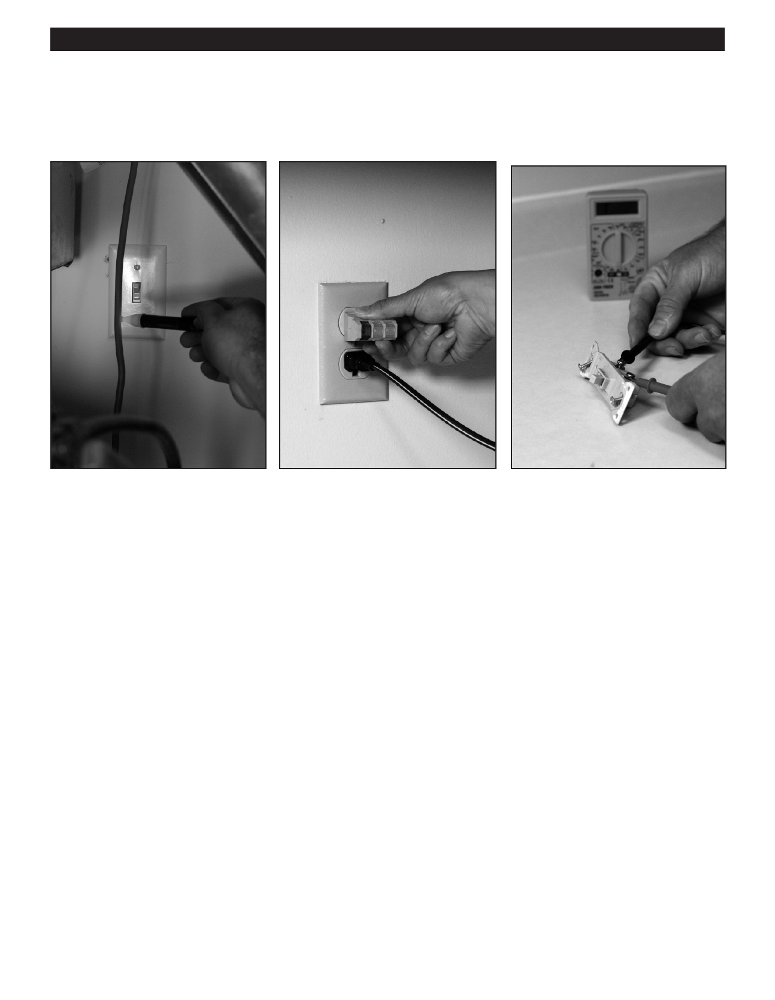

PA RT I C I PA N T R E S O U R C E G U I D E
Key Tools for Electrical Repairs (Continued)
Testing Tools
A neon circuit tester checks circuit • A plug-in tester can identify hot
But a multimeter (sometimes called
wires for power.
and neutral slots on a standard
a volt/ohm meter or VOM) can do all
A continuity tester checks switches,
three-slot receptacle. It can also
these things—and replace all these
lighting fixtures, and other devices for
test for grounding.
testers.
faults. It has a battery that generates
current and a loop of wire for creating
and electrical circuit.
Other Recommendations for Your Repair Toolkit:
Other Recommendations for Your Testing Toolkit:
18